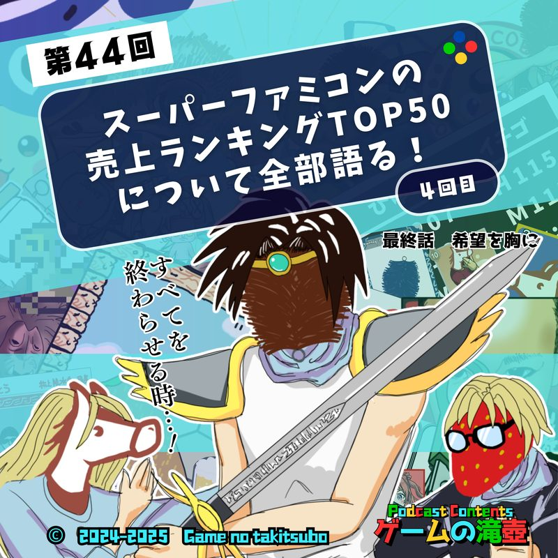
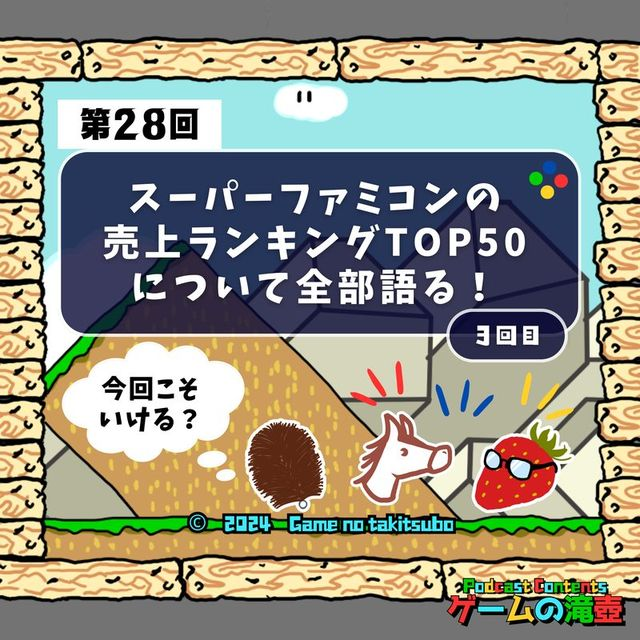
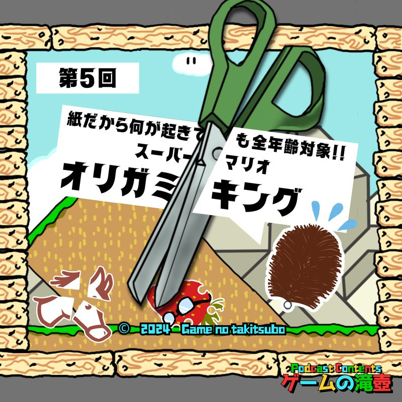
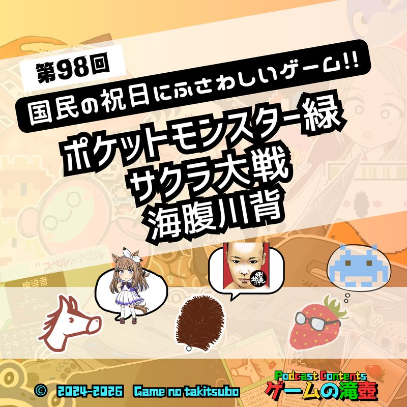
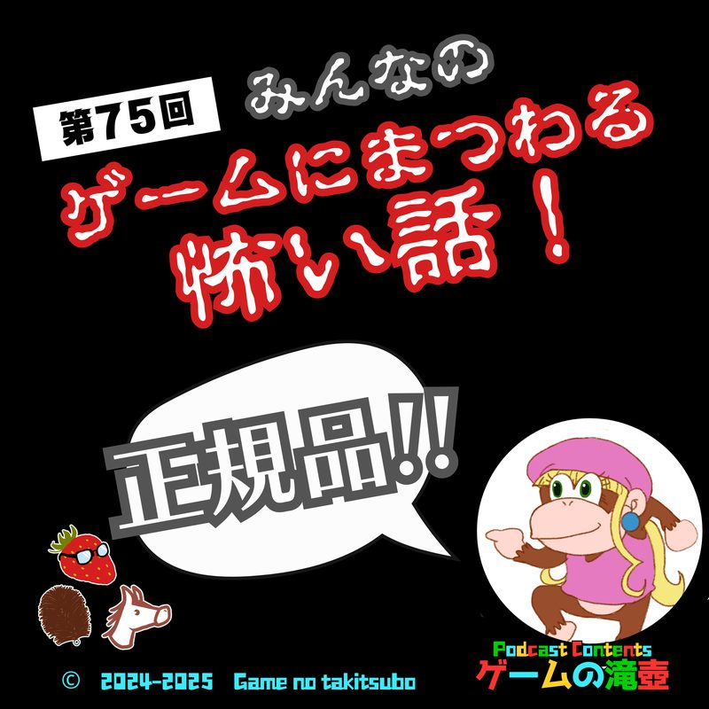
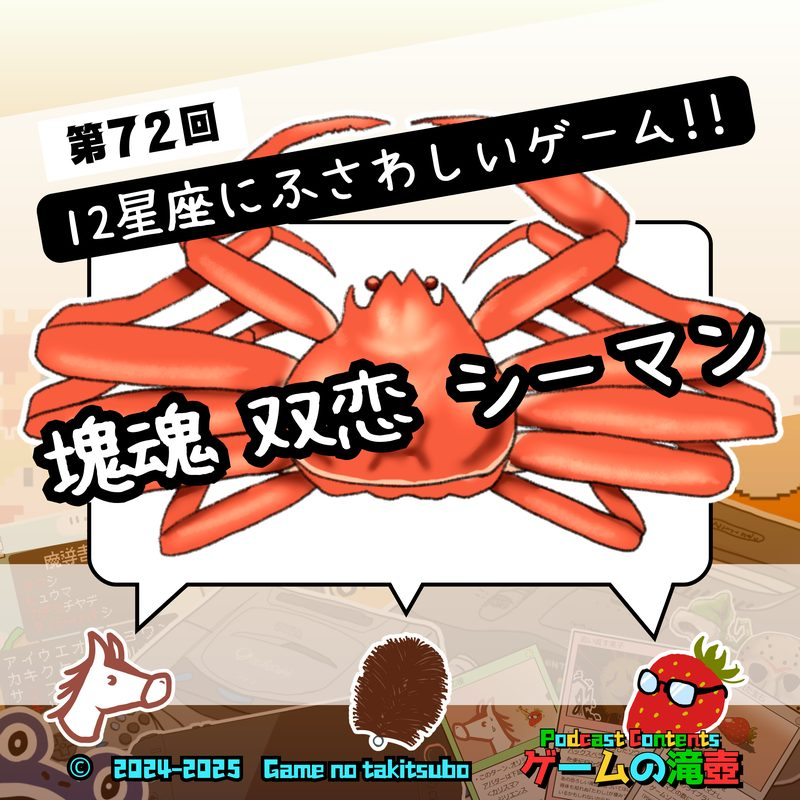
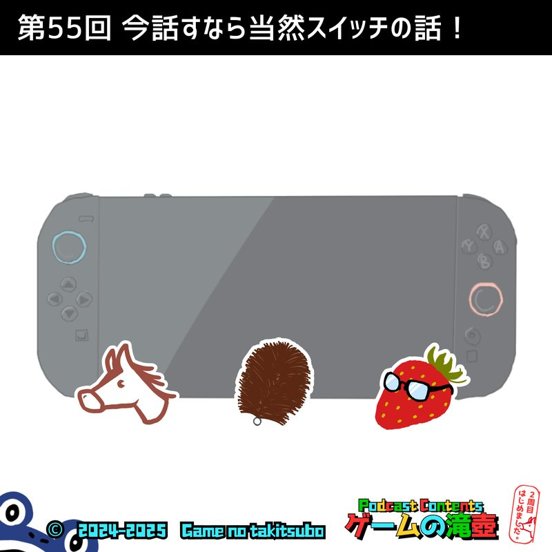
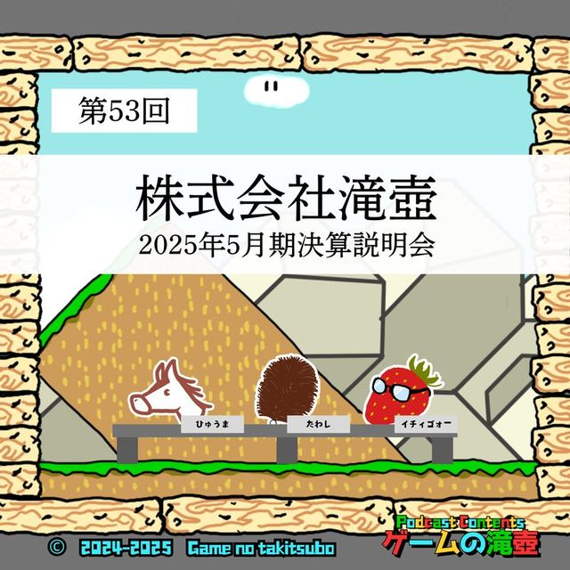
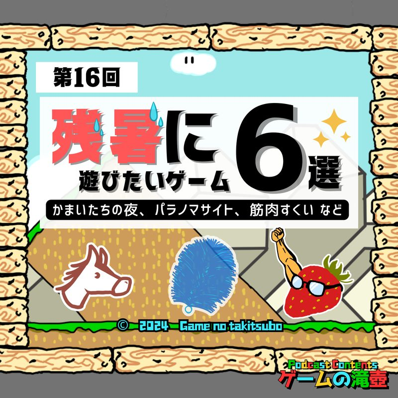
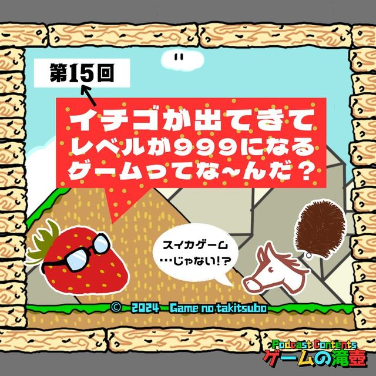

ドラゴンクエストIII そして伝説へ…
ポッドキャスト「ゲームの滝壺」で「ドラゴンクエストIII そして伝説へ…」が話題に出た回の一覧です。
滝壺での登場 10回コーナーやチャプターの話題として語られています。

#442025.03.26📑 チャプターで登場 SFCの売上ランキングTOP50について全部語る！ 4回目（最終回）スーパーファミコンよ永遠なれ ⏱ 31:51〜 第20位 ドラゴンクエストIII そして伝説へ…スーパーファミコンの売り上げランキングTOP50について全部語る！ お待たせしました。ついに完結です。やりきりました！ 寝ます。
#282024.12.04📑 チャプターで登場 SFCの売上ランキングTOP50について全部語る！ 3回目 ⏱ 40:18〜 第20位 ドラゴンクエストIII そして伝説へ…スーパーファミコンの売り上げランキングTOP50について全部語る！ お待たせしました。3回目の挑戦です。 前回でランキングが不思議のダンジョンになってしまったため、また初めから話せます！
#52024.06.26📑 チャプターで登場 紙だから何が起きても全年齢対象！ ペーパーマリオ オリガミキング（おまけ：先日のニンダイについて） ⏱ 33:56〜 ドラゴンクエストIII そして伝説へ… / ドラゴンクエストI＆II今回のテーマはペーパーマリオ オリガミキング！ キャッチーな見た目に反し、マリオとは思えない衝撃展開が目白押しとなっております。 6月18日に配信されたニンテンドーダイレクトについても色々と話します。
#982026.03.25💬 トーク内で登場 ポケモン緑、サクラ大戦、海腹川背…今夜決定！ 国民の祝日にふさわしいゲーム！！ 祝日を体験済みのすべての皆さん！！ その祝日に対応するゲームは何なのか気になっていませんか？ 国民の祝日にふさわしいゲーム、すべて決めます！ ※今回紹介している『Idle Gumball Machine』は、開発元のA…
#752025.10.22💬 トーク内で登場 みんなのゲームにまつわる怖い話！ こんな猿のゲームで捕まりたくない！ リスナーのみなさんから投稿いただいた、ゲームに関係する怖い話を紹介します！
#722025.10.01💬 トーク内で登場 塊魂、双恋、シーマン…今夜決定！ 12星座にふさわしいゲーム！！ 祝日を体験済みのすべての皆さん！！ その祝日に対応するゲームは何なのか気になっていませんか？ 国民の祝日にふさわしいゲーム、すべて決めます！ ※今回紹介している『Idle Gumball Machine』は、開発元のA…
#552025.06.11💬 トーク内で登場 今話すなら当然スイッチの話！ マリオ、ポケモン、ドラクエ…に登場するスイッチを語る！！ スイッチの話をしております！！
#532025.05.28💬 トーク内で登場 株式会社滝壺 2025年5月期決算説明会 異様なタイトルですが、ゲームの滝壺一周年記念回です！ 二年目もゲームの滝壺をよろしくお願いします！！
#162024.09.11💬 トーク内で登場 かまいたちの夜、パラノマサイト、筋肉すくい…残暑に遊びたいゲーム6選！ ミステリーやホラーゲームをはじめとし、お祭り系や夏に関連するゲームも…残暑に遊びたいゲームを語ります。
#152024.09.04💬 トーク内で登場 イチゴが出てきてレベルが999になるゲームってな～んだ？ 今回は記念すべき第15回！ ということでイチィゴォースペシャルをお送りします。 イチゴが出てくるゲームを紹介するようですが…？ ほか、先日のニンダイの話など。SAME SERIES同シリーズのタイトル
TALKED TOGETHER同じ回で話題に出たタイトル
🎧 気になった回は、各ページのプレイヤーからすぐ再生できます。
「ドラゴンクエストIII そして伝説へ…」の話がもっと聴きたくなったら、おたよりでリクエストしてもらえると番組が喜びます。